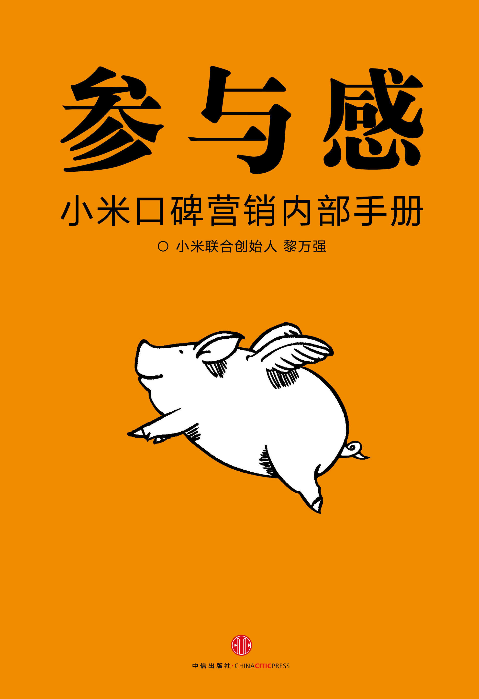

注：【】部分为笔者心得，非原文摘抄。
- 参与感三三法则——三个战略：做爆品、做粉丝、做自媒体；三个战术：开放参与节点、设计互动方式、扩散口碑事件。
- 社交网络的建立是基于人与人之间的信任关系，信息的流动是信任的传递。企业建立的用户关系信任度越高，口碑传播越广。
- 参与感能扩散的背后是“信任背书”，是弱用户关系向更好信任度的强用户关系进化，粉丝文化首先让员工成为产品品牌的粉丝，其次要让用户获益。
- 只有让企业和用户双方获益的参与感才可持续！
- 做自媒体是让企业自己成为互联网的信息节点，让信息流速更快，信息传播结构扁平化，内部组织结构也要配套扁平化。
- 进行参与感构建，要尽量减少用户参与的成本以及把互动方式产品化。
- 为谁设计是用户体验设计的原点。
- 【好用比好看更重要、完成比完美更重要。】
- 把活动当作产品来设计和运营，持续优化。
- 活动产品化是指做产品要运用运营思维，把一些活动的环节植入设计成为产品的功能。
- 不要迷信大师，也不要迷信灵感。
- 人才要最专业，也要最合适。
- 员工有创业心态就会自我燃烧，就会有更高主动性，这样就不需要设定一堆的管理制度或 KPI 考核。
- 和用户做朋友。
- 让一线产品经理和开发工程师面对用户，才能够抓住用户真正需要什么。
- 竞品思维在前期分析可以使用，但在做产品过程中是很忌讳的，变成只关注对手而不是用户。
- 【先做美誉度、再做忠诚度，然后做知名度。】
- 在强调工具化价值的互联网产品中，忠诚度基本很难建立。
- 粉丝效应都是从一个小族群开始，大家因为某个共同兴趣而聚在一起。
- 粉丝效应不可设计，但可因势利导，应给予他们更多可参与的互动方式。
- 创业的第一步是确定产品是什么、要解决什么样的痛点。
- 创业的产品能够成功的前提是先挠自己的痒处。
- 好的品牌宣言和愿景要简单纯粹，表达自己内心的愿景，也能激发大家对美好的向往。
- 口碑本源是产品。
- 基于产品的卖点和如何表达卖点的基本素材是传播的生命线。
- 对于全新的品牌，产品的品质就是品牌。
- 戏剧化的表情，传播效果才是最好的。
- 新品发布，事件必须有热点是基本的决策思维。
- 发布会上新产品是唯一的明星，产品有料才能获得大声量的传播。
- 只要内容好活动好，广告也是可以口碑传播的。
- 人类对于美好情怀的向往其实一直没有变。
- “以奇胜，以正合”，在品牌基调传播中，正能量仍然是重要的选择。
- 现在媒体信息量太大，只是做小打小闹的传播容易被淹没，需要找到能有头条价值的事情，占据头条，才能有关注。
- 做产品，噱头成不了卖点；做市场，段子成不了头条。
- 科技圈做产品上头条就得靠真枪实弹，其中“抢首发、做第一”最直接有效。
- 好产品自己会说话，产品给力，才能不断积累起品牌势能，外部平台合作是功率放大器，是给势能转化为市场动能时提供加速。
- 产品和营销的关系，是 1 和 0 的关系。
- 互联网是注意力经济，一个品牌和事件的关注度，一定要有碰撞、有矛盾、有张力才起得来。
- 对产品或服务的吐槽，要快速回应，能解决的以最快速度、最大投入第一时间解决，不能马上解决的，就要果断道歉及善后。
- 没有什么能比眼见为实的真相和坦诚相待的态度更有力、更能打动人。
- 不必拘泥于所谓传统正规的形式，只要事实依据扎实，可以寻找更有力、直切要害的新方法。
- 放松点、娱乐点，能消解不必要的紧张，在新媒体平台时代，这可能是更好、更有力的公关传播方式。
- 新营销的第一步，让自己的公司成为自媒体。
- 企业做自媒体的内容运营，要先做服务，再做营销。
- 能享受服务是用户关注企业的动力。
- 每一个做媒体运营的员工都应该是产品玩家。
- 企业要花精力让自己成为能持续提供优质内容的自媒体，同时，也应该发动用户来产生内容。
- 新媒体和传统媒体运营最大的不同是，运营不再是单向的灌输，用户和企业之间的信息对称，交互随时随地都在发生。
- 用户关系越弱，信任传递就越弱，参与感的口碑事件扩散效果也就越弱。
- 炫耀与存在感，这是后工业时代和数字时代交融期，在互联网上最显性的群体意识特征。
- 用户的参与热情最珍贵，应该给他们提供足够便利的（参与）工具（和方式）。
- 借势是新媒体人的必修课。
- 形式重复的活动会使粉丝增长效率迅速下降。
- 海底捞的管理理念就是，你首先要体现对自己员工的尊重和信任，员工才会在服务用户的时候真心地把服务当成他自己的工作。
- 在制度面前更重视人的因素，就会给我们带来更好的回报。
- 给小米的用户做服务的人，当他们是小米公司一员的时候，才会对服务工作有更多的认同感，他们会感觉到，这是在给自己的用户做服务。
- 用户在哪就到哪做服务。
- “快”的服务会成为品牌的核心竞争力。
- 好酒店要看厨房，好服务网点要看内库。
- 在一个对客户光鲜，对员工却将就的环境下，服务体系的员工难免把服务当成一份不得已去完成的工作罢了。
- 用制度规范出来的“服务”，是假的；用环境塑造出来的服务，是真的。
- 你给员工提供怎么样的办公环境，他就会回报你怎样的工作成果。员工从公司对自己的服务中体会到的感受，将直接反馈到员工对用户的服务态度当中。
- 在产品的文案策划和画面表达上有两点要求：一要直接，讲大白话，让用户一听就明白；二要切中要害，可感知，能打动用户。
- 产品点分为卖点和噱头，卖点是用户愿意为之掏钱的，噱头是有意思但用户不会为之掏钱的。
- 所谓营销绝对不要讲一堆空话，把最能打动用户的话用最直接简单的方式说出来就可以了。
- 产品图关键要体现品质，让人看到就想拥有。
- 情感化的设计有两处可着力：1，从产品定义本身就开始考虑；2，善用经典的生活场景或节日文化。
- 设计要留白，设计语言别太满，意思是指要留有想象空间，要有期待感。
- 留白是一种设计上的选择、精粹、顿挫与控制，呈现的是关键的核心元素，以隐晦的方式或表达情怀，或展现质感，留有足够意味的想象与期待。
- 过多的设计都是信息干扰。
- 现场是检验设计好坏的唯一标准。
- 有好的视频素材，也别忘了设计一个吸引人的图片封面。
- 设计管理三板斧：坚持战略、死磕到底、解放团队。
- 不懂用户就没有设计。
- 以用户反馈来驱动开发。
- 当你很认真地对待用户的时候，用户也会用心对待你。
- 有玩者之心的团队，才会真正爱自己的产品，爱自己的用户，这才是解放团队真正的核心。
- 成规模的亚文化群体聚集的社区不仅仅是内容的产生源，背后也都有着成体系的产品机制的支撑。
- 参与感是一种基于情感互动和价值认同的新消费需求。
- 好的设计背后，都流露出同一种思维：寄情于物，寄关怀于物，注入可被感知的用心。
- 未来属于能真正理解消费情绪的品牌，而品牌背后的团队除了工程师，更应该有设计师和艺术家，他们都是对生活高感知的人群。
- 创业如创作，从开始第一步到最后冲刺，掌声与关注之外，更多的是寂寞的长跑。能支撑你咬牙坚持的，除了热爱，别无他途。
- 一个人在事业上所能取得的成就，和他对这份事业的热爱是分不开的。
- 最初爱你、赞赏你的，就是核心种子用户。
- 发烧友意见领袖发挥的是口碑营销的张力，现代社交化媒体的崛起又给它无限加成。
- 互联网转型需要内外兼治，由内而外。
- 扁爆爽核心思路：
- 产品策略、产品结构一定要“爆”；
- 组织结构要梳理，要扁平化；
- 团队的激励，就是一个“爽”字。
- 做企业的管理者，要真的把姿态放得更低一些，去跟你的员工打成一片，听听他们到底想怎么爽，怎么给予他们参与感、成就感，怎么给予他们足够的激励。无外乎就是爽，员工爽，他就会自我燃烧。
- 只找那些有经验并且有创业精神的人。另外，给团队成员足够好的回报、足够的利益分享。
- 对员工来讲，当企业有很清晰的产品结构，有很好的组织结构的时候，真的是尊重他们的时候，他们自然会有很好的创新，并且有很好的服务。
- 今天人才竞争这么激烈，没有足够的利益驱动，纯粹讲兄弟感情的话，其实很难。
- 做老板的要负责把整个班子团队搭好。
- 公司要成长快则是产品要“爆”，而员工“爽”才能组建成一流团队！